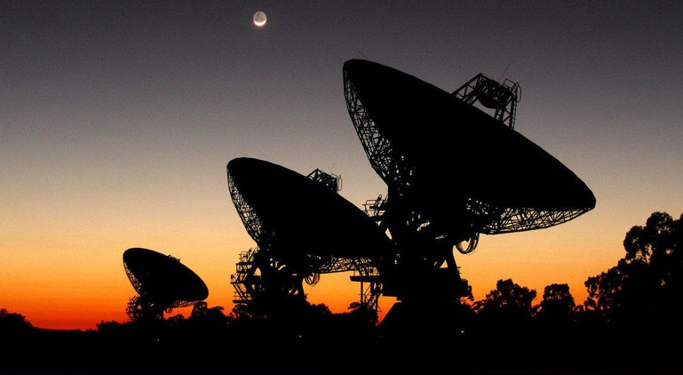
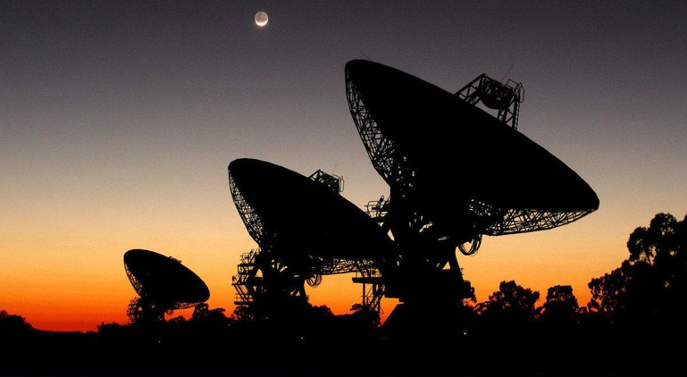

Los medios de trasmisión son los caminos fisicos por donde el emisor y el receptor pueden comunicarse, podemos separar estos medios de la siguiente manera:
Guiados
No guiados
los medios guiados nos proporcionan una guia como lo dice su nombre o podemos verlo como un camino, para que la informacion llegue a su destino mediante ese camino.
Mientas que los los medios no guiados nos proporciona un soporte para las ondas se trasmitan pero no las dirige.
Al utilizar medios guiados(dependiendo el medio que se utilice) determina limitaciones de la trasmisión las cuales pueden ser las siguientes:
Velocidad de trasmisión de datos
Ancho de banda que soporta
Espacios entre repetidores
pero al usar medios no guiados lo que determina estas limitaciones serian las atenas que tengamos para locarlizar la señal.
 
